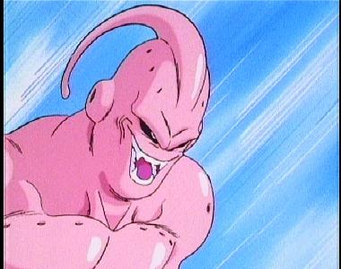

| Goku is the main character of DBZ, the main rival of Vegeta, and he has saved the world several times. He's married to Chi-chi and he has sons named Gohan and Goten. He is the only one to reach all of the super saiyen stages. He was originally sent to Earth to destroy it, but an accident has left him to become good. After Cell self-destructed, he has trained in the “other world”, during the Buu saga though, the supreme kai has offered to switch places with him so he can live on Earth again. Goku is the first to go super saiyan 1,3&4. He goes super saiyan when Freeza destroys Krillen(his life long best friend), he reaches super saiyan 2&3 while training in the “other world”, and goes super saiyan 4 while fighting Bebi-Vegeta. He has faced Vegeta several times, when Vegeta first comes to Earth, and when Vegeta is controlled by Babi-di. Without Goku, Freeza, the Ginyu force, and Majin buu would still be in power. He also learns the fusion technique while in the “other world”. He teaches Gohan, Goten, babytrunks, and Vegeta how to fuse. He is also the most powerful non-fusion character in DBZ. |
| Vegeta was the prince of all saiyans, he was sometimes good, sometimes bad, and an all-around bad dude. He comes to Earth in search of the dragonballs, but almost got killed by his lifelong rival, Goku. After the Freeza Saga, he becomes good (sort of), marries Bulma, has a son named Babytrunks and becomes a super saiyan. He constantly pushes himself to be better than Goku or “Kakarot” as he believes that he should be the most powerful saiyan. He is a very honor-bound person, and he gets most of it from his father King Vegeta. He is very ruthless at the beginning of DBZ, as he destroys his own partner Nappa!, He gets even more ruthless when he becomes “Majin Vegeta” and kills innocent people at the world tournament. He makes himself get controlled by Babi-di, only because he wants more power and wants to fight Goku. He is the second most powerful non-fusion character in DBZ and always comes in “second-place”. He makes a bunch of stupid mistakes sometimes, like letting Cell become “perfect”, almost kills himself when he suddenly attacks Cell and had to get saved by Gohan, and ultimately releases buu when he fights Goku. He truly becomes “good” when he realizes what a mistake he has made to release buu, and sacrifices himself to destroy buu. He later saves the Z fighters by fusing with Goku and saving everyone from buu. He goes super saiyan when he pushes himself to the level that he didn't even care that Goku(Kakarot) was stronger than him, and went super saiyan 2 while he was “Majin Vegeta”. |
| DBZ basically revolved around Gohan growing up from a child to an adult. Gohan, even as a little kid, had an immense power level when he got mad. Examples of this are him getting mad at Raditz and bashing him in the chest, throwing a masenko at Nappa when he destroys Piccolo,beating Freeza to a pulp when he wouldn't let Gohan save Krillen, and in an amazing display of power destroyed Cell with the mother of all kamehamehas. His hidden power has led Piccolo to train him, and his father Goku believing in him. The supreme kai has also taken interest in his hidden power and gives him the Zet sword when Gohan was nearly dead from buu. The height of his power was when he fought Cell, he was the first and most powerful super saiyan 2 when he defeated Cell. He goes super saiyan while training in the room of spirit and time, turns super saiyan 2 when Cell crushes Android 16's head, and goes to a completely different level when supreme kai awakens his mystic power. He's jealous that Goten is youngest super saiyan ever, and he turns himself into a superhero called the Great Saiyaman, he also marries Videl later in the series. |
| Piccolo was originally a bad guy, but he became a good guy because of his feelings for Gohan. Piccolo has played a big role in DBZ, teaches Gohan to release his hidden power, and even sacrificed himself for Gohan before. As DBZ clearly became a super saiyan-dominated arena after the Freeza saga, but he kept his power level as high as them by fusing himself with Nail and Kami. He was originally hatched from the egg that Piccolo Daimao produced after he was defeated by Goku. |
| Bulma is a human girl who first makes her appearence in Dragonball when she meets a young Goku and decides to join him in his adventure after shooting him in the head. Bulma and Goku become very good friends, and in Dragonball Z,Bulma helps the Z-Warriors by occasionally making devices and using her superior intellect to help them in their time of need. Bulma makes a device in GT to help Vegeta transform into SSJ 4.Bulma is also the maker of the Dragon Radar. |
| He is the son of Vegita and Bulma. He is a pretty powerful saiyan. and he introduces himself by killng Freeza. By now you're probably pretty confused, so let me lay it out for you. Gokou, didn't completely kill Freeza, he let him out to die in space, pieces of him everywhere. (sorry for being so graphic). But Freeza's father, King Cold, found him and had his scientists put him back together. So then they went to earth (of course). And then Trunks came. He was from the future. Bulma is an extremely talented Scientist/ inventor, so she built a time machine to send future trunks in. So he came and turned Super Saiyan, and Killed Freeza and King Cold.Trunks originally came here to warn Goku of the Androids and gave him some heart medicine, because in the future, Goku dies of a rare heart disease.Eventually, he goes back to the future and kills off Android 17,18 and Cell. |
 |
The Z Warriors are the name for the earth-protecting team. The most powerful are Goku, Gohan, Vegeta and Piccolo. There are also other humans who play a role in defending the Earth. Krillen was Goku's closest friend and has fought with him forever. He and Gokou both Trained under Master Roshi. And at first both their power levels were about the same. But as the training proceded, Goku grew stronger than Krillin, but that's ok! Krillin and Gohan and Bulma go to Namek, and Krillin gets killed by Freeza. But again it was the killing that played a big part. It made Gokou turn Super Sayan so he could defeat Freeza. well anyway Krillin is a nice, funny, and good guy. He's also really short and bald with 6 dots on his head,but he eventually grows hair,marries Android 18,and has a daughter named Marron. Tien is a human warrior that goes through most of Dragonball and Dragonball Z training with his friend Chaozu to become more powerful. He has a little grudge against Vegeta for getting him killed in the beginning of Dragonball Z and is often jealous of his power. Tien tries to compete with Goku and the other saiyans until the end of the Buu Saga when he realizes that he is too weak to fight anymore and slips through the background after that.He also teaches the Z Fighters the valuable Solar Flare,Mult-Form,and Kikoho techniques. Yamcha is a character who makes his appearence in Dragonball as a common thief until Goku and his crew come along and Yamcha desides to join in their adventure to collect the 7 magical dragonballs. After that Yamcha is pictured as one of the weaker fighters in Dragonball Z and is often a coward when it comes down to fighting someone more powerful than him. Yamcha falls in love with Bulma but goes on with his life after Bulma has a child with Vegeta. He then spends all of the Buu Saga walking around in a yellow tuxedo and doing practically nothing. |
| Frieza was the most powerful creature in the universe at the time that he lived in. No one could match his power level, and he could transform 3 times. He controlled an empire, ruling several planets, had an elite force called the Ginyu Force, and got Raditz, Nappa, and Vegeta to do his bidding. He even destroyed the saiyan's home planet Vegeta because he was afraid of the super saiyans. He killed both Goku's father (Bardock), and Vegeta's father (King Vegeta). He uses special devices called scouters which determined an enemy's fighting power, which he stole from the saiyans. His brother, Koola also controlled an empire and he could transform 4 times! When planet Vegeta exploded, 7 saiyans escaped (Raditz, Kakarot, Nappa, Vegeta, Taurus, Pythanas, and the super saiyan named Brolli). When Frieza went after the dragonballs on planet Namek, Vegeta decided to rebel against Frieza, which led him to be on the good guys side(for a while). Frieza later killed Vegeta, and Goku succeeded in killing him. When Freiza killed Krillen, Goku's best friend, Goku went mad and turned super saiyan, the very thing Freiza was afraid of. Frieza killed Goku in the middle of the battle, but Goku got wished back by the dragonballs. Frieza sliced himself up with his own energy discs, and Goku offered him a chance to leave the planet before it explodes. Freiza refused, and Goku killed him. A while later, Freiza's father King Cold had him rebuilt into a robot, but nevertheless Freiza and his father got disposed of by the mysterious stranger known as Trunks. |
| The Androids were a bunch of superior fighting machines created by Dr.Gero to destory Goku. The most powerful were Android 17 and 18. Android 17 was created to destroy Goku. Both him and his twin sister (Android 18) are constructed using a human base, making them mechanical and biological. After running for his life from Vegita and the Z-fighters, Dr. Gero returns to his lab where he tries to convince Android 17 and his sister to fight the Z-team. The androids don't like being told what to do, so #17 kills his creator by kicking his head off and then crushing it. Accompanied by Android 18 and Android 16, they go off seeking Goku. Android 17 was a strong fighter, and could have beaten Super Saiyan Vegita even though Vegita killed Android 19 like nothing. However, Android 17 soon gives up on destroying Goku when he is forced to flee for his life from Cell. He is eventually absorbed by Cell allowing Cell to turn into his 2nd Form. He briefly makes another appearance in DBGT as Super Android 17. Android 18 is the twin sister of Android #17, and was created by Dr.Gero but because of malfunctioning problems had to be shut down. Unlike her brother #18 is not as patient and acts more viciously in her battles. While in the Cell Saga she develops a crush on Krillin and ends up marrying him after Cell is defeated. After that #18 plays a minor role in the Buu Saga fighting in the World Tournament. |
| Gero created his ultimate creation, Cell. Cell was programmed from the DNA of Gohan, Goku, Vegeta, Piccolo, etc. Cell's main purpose was to absorb androids #17 & #18. Cell came from the future into this world to absorb the androids because Trunks had killed them in the future. Cell had to absorb the androids to reach his ultimate form, and as he knew the Z fighters main attacks (kamehameha, energy disc, solar flare, etc.), stopping him proved almost impossible. He absorbed #17 first, and reached his semi-perfect form, and then Vegeta let him absorb #18 in order for him to reach his perfect form. After he beat Trunks and Vegeta, he issued a tournament called the Cell Games because he wanted to face Goku. Cell was disappointed when Goku forfeited the match and let Gohan take his place. Underestimating Gohan's true power proved to be a mistake, and when Cell had his “cell juniors” attack the Z fighters, and crushed Android #16's head, Gohan unleashed his full power and went super saiyan 2. Even when Cell went to his super perfect form, he still couldn't beat Gohan and Gohan punched android #18 out of him, so he self-destructed. Goku teleported him to king kai's planet and he blew up, killing Goku & king kai. Cell somehow regenerated from a single cell and came back to Earth. During a furious battle of kamehamehas, Gohan finally won, and Cell was wiped off the face of the planet. |
|  | There are two sides to Majin Buu: a good side and a bad side. The good side is referred to as Fat BUu and the bad side as Kid Buu. Fat Buu was formed when Babidi successfully collected enough energy to release Buu. Although very infant-like, He possesses enough power to destroy the world. Fat Buu didn't like taking orders and destroyed Dabura, and later Babidi. The original “Buu creature” (Kid Buu) turned into Fat Buu by absorbing every Kai but the Supreme Kai. Vegeta had underestimated Buu when he decided to go “Majin” and absorb Goku. Vegeta even sacrificed himself to destroy Buu, although it didn't work, (Vegeta got wished back later). Goku later faced Buu, and even had to go super saiyan 3 to beat him. Buu can change many forms, including the most powerful form: Super Buu, as he can absorb the Z fighters and Goku & Vegeta had to fuse into Vegetto to rip the Z fighters out of him, and Super Buu turned into his “original form”( Kid Buu). Buu had a good side and a bad side to him, and they separated into a “Good Buu” and an “Evil Buu” after super saiyan 3 Goku weakened him, and super saiyan 3 Gotenks laid a whopping on him.. Strangely enough, he's friends with Hercule. Fat Buu also has the ability to turn people into food. Kid Buu was the “original” Buu, before he absorbed the Kais and became Fat buu. Kid Buu was pure evil, as Vegetto pulled out the Z fighters from Super buu, Super buu reformed into Kid buu. Kid buu may be small, but he's the last villain in DBZ, and immensely strong. Kid buu can split up into millions of different pieces and reform again. Kid buu had even destroyed the Earth back when he was Super Buu too, (the Earth got wished back). Kid buu was the creature that Bibidi had originally summoned and was the most powerful villain of DBZ (if you don't count Super Buu). Goku had to create a giant spirit bomb with the energy of the entire universe in order to destroy him. Goku, Gohan, and a few others were the only ones who survived when Super Buu destroyed the Earth, (Goku had to use teleport). |